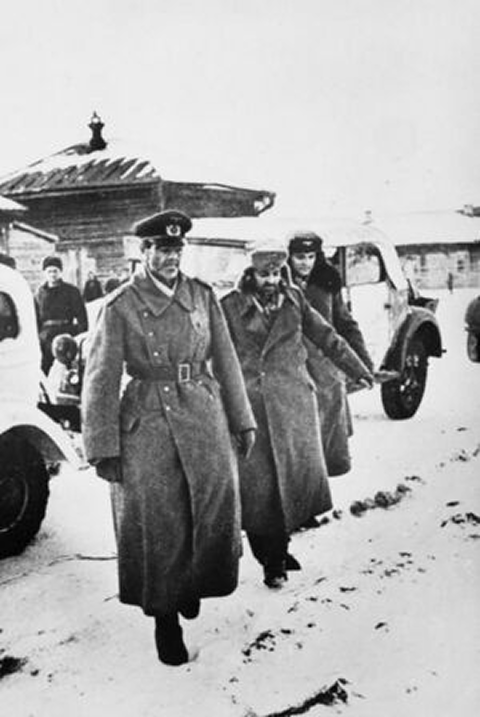

Кол-во дивизий: 190
Важнейшие события

Этап I.
Оборонительный
Основные события:
- 22 июня 1941 года. Начало Великой Отечественной войны. Нападение Германии и её союзников на СССР — операция «Барбаросса»;
- 22 июня — конец июля 1941 года. Оборона Брестской крепости;
- 10 июля — 30 сентября 1941 года. Ленинградская операция; Начало блокады Ленинграда (8 сентября 1941 года);
- 30 сентября — 5 декабря 1941 года. . Битва за Москву;

Этап II.
Наступательный
Основные события:
- 19 ноября 1942 года. Начало контрнаступления советских войск под Сталинградом;
- 2 ноября 1942 года — 18 января 1943 года. Частичный прорыв блокады Ленинграда: операция «Искра»;
- 31 января — 2 февраля 1943 года. Капитуляция германских войск под Сталинградом. Пленение нацистского фельдмаршала Ф. Паулюса;
- 5 июля — 23 августа 1943 года. Курская битва;

Этап III.
Заключительный
Основные события:
- 14-30 января 1944 года. Операция «Январский гром»: полное снятие блокады Ленинграда;
- 8 апреля — 12 мая 1944 года. Крымская операция;
- 23 июня — 29 августа 1944 года. Операция «Багратион». Освобождение Белоруссии.
- 16 апреля — 8 мая 1945 года. Берлинская операция;
- 8 мая 1945 года. Подписания Акта о безоговорочной капитуляции Германии;